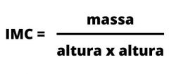

Seu IMC:
| Classificação | IMC |
|---|---|
| Abaixo do Peso | Abaixo de 18,5 |
| Peso Normal | 18,5 - 24,9 |
| Sobrepeso | 25 - 29,9 |
| Obesidade Grau I | 30 - 34,9 |
| Obesidade Grau II | 40 ou Maior |
O que é IMC?
O índice de massa corporal (IMC) é uma medida internacional usada para calcular se uma pessoa está no peso ideal. Trata-se de um método fácil e rápido para a avaliação do nível de gordura de cada pessoa, sendo, por isso, um preditor internacional de obesidade adotado pela Organização Mundial da Saúde (OMS).
Como é calculado o IMC?
Para determinar o IMC, basta dividir o peso do indivíduo (massa) pela sua altura ao quadrado. A massa deve ser definida em quilogramas (kg) e a altura em metros (m).
